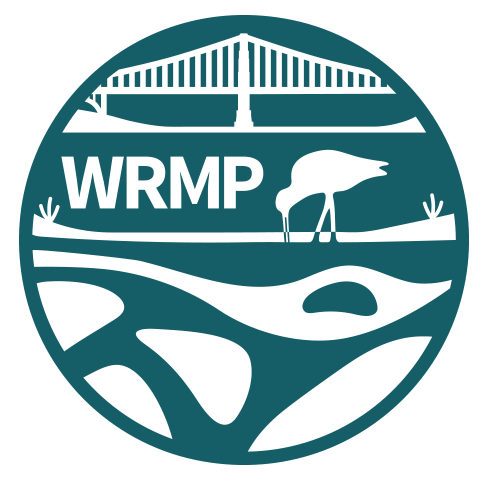
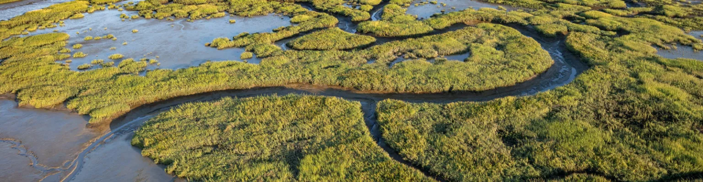
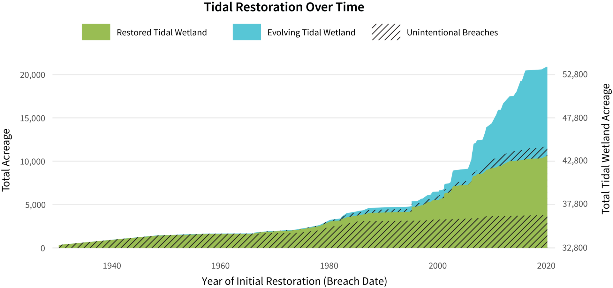
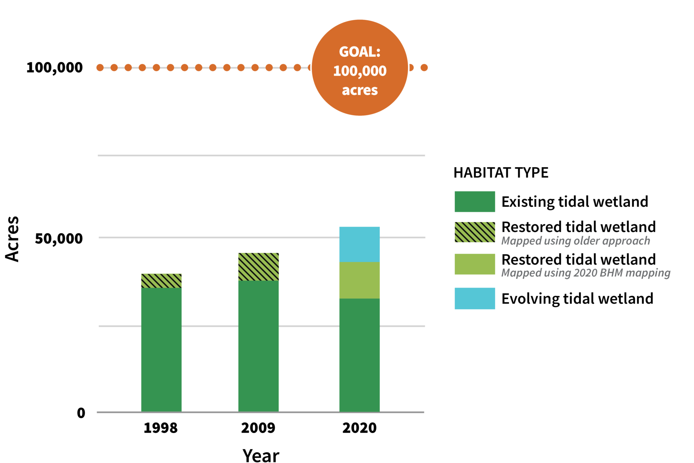
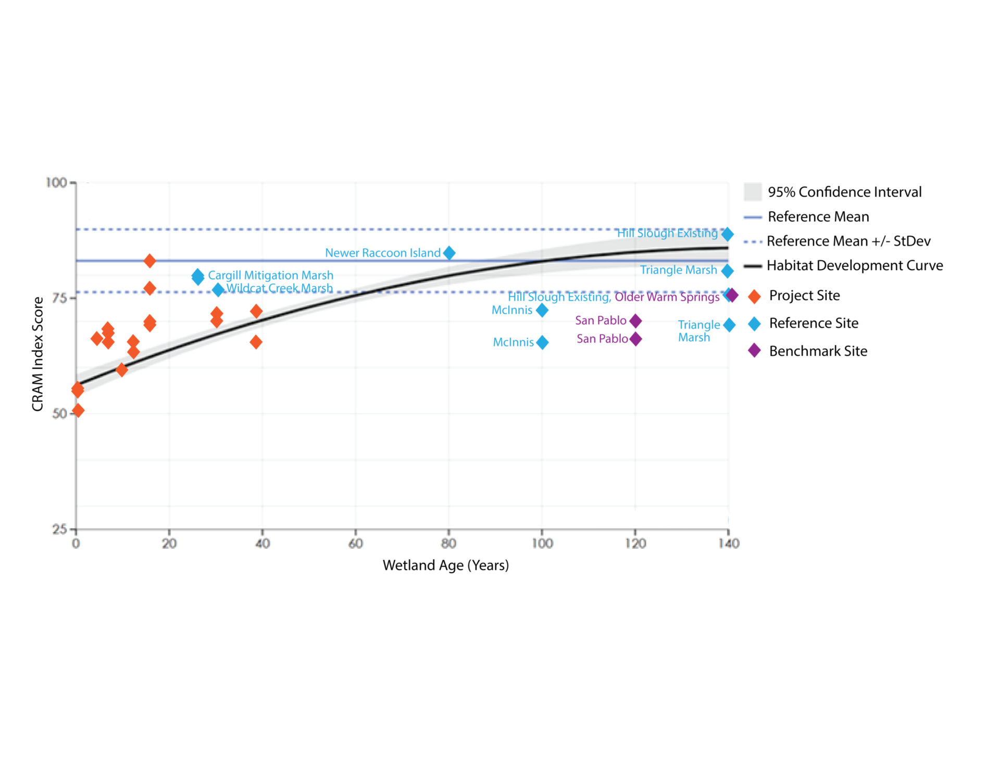
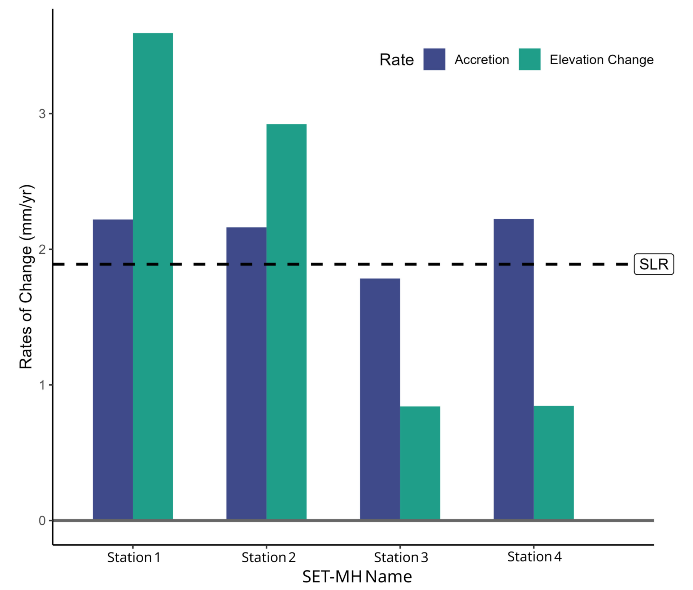

Metrics are how the WRMP measures different indicators of wetland function in the Estuary.




Existing, restored, and evolving tidal wetland acreage across the Bay in 1998, 2009, and 2020, tracked against the 100,000-acre regional goal.
FIGURE DATA
Tidal wetland extent by mapping year
Acreage of each tidal wetland class for 1998, 2009, and 2020.
SOURCE DATASET
Baylands Habitat Map 2020
Habitat type and extent across the San Francisco Bay baylands, mapped for the WRMP.
EcoAtlas
Explore wetland habitat and restoration projects on the live regional map.
How this metric is derived
Habitat polygons from each edition of the map are reclassified to one common set of tidal wetland types, then totalled by class and year. Change between years reflects both change on the ground and improvements in mapping resolution.
Management questions
Cumulative acreage of restored and evolving tidal wetland across the Bay, plotted by the year each project was first opened to the tide.
A project joins the curve when its levee is breached and stays on it while the site evolves toward tidal marsh, so the running total reports restoration underway rather than restoration completed.
Counting this way separates two things earlier acreage tallies ran together: how much land has been committed to restoration, and how much of it has developed marsh vegetation and channel structure. Both are tracked against the regional goal of 100,000 acres of tidal wetland in the Baylands.
Restored acreage by year
Acreage restored in each year, and the running total.
Restoration project tracker
Every Bay tidal restoration project with its breach date, acreage, and current site state.
Browse the restoration projects behind this curve on the regional map.
Projects in the tracker are grouped by the year of first tidal reconnection and their acreages accumulated forward. Sites still evolving count at full project acreage, so the curve reports area under restoration, not area of established marsh.
CRAM index scores of restoration sites plotted against wetland age. The fitted curve describes the condition a restoring marsh can be expected to reach as it matures, so each site is read against a benchmark for its own age rather than a single pass-or-fail threshold.
CRAM scores by site age
Index score and wetland age for each restoration site, with the fitted curve.
CRAM assessment scores
Site-level condition scores for estuarine wetlands across California.
Nothing linked yet
Scores from mature reference marshes set the upper bound, and a curve is fitted through restoration-site scores against years since breach. A site is compared with the curve value for its own age.
Rates of marsh surface elevation change measured at Petaluma stations, compared against the local rate of sea-level rise. Where a station gains elevation faster than the water rises the marsh is keeping pace; where it does not, the marsh is losing ground in the tidal frame.
Elevation change rates by station
Annual rate of elevation change and accretion for each station, with the local sea-level rise rate.
SET-MH measurements
Elevation change and accretion readings from the program's surface elevation table stations.
Repeat readings at each surface elevation table are regressed against time to give a rate of elevation change, and marker horizon cores give accretion over the same period. Rates are compared with the local tide gauge trend.